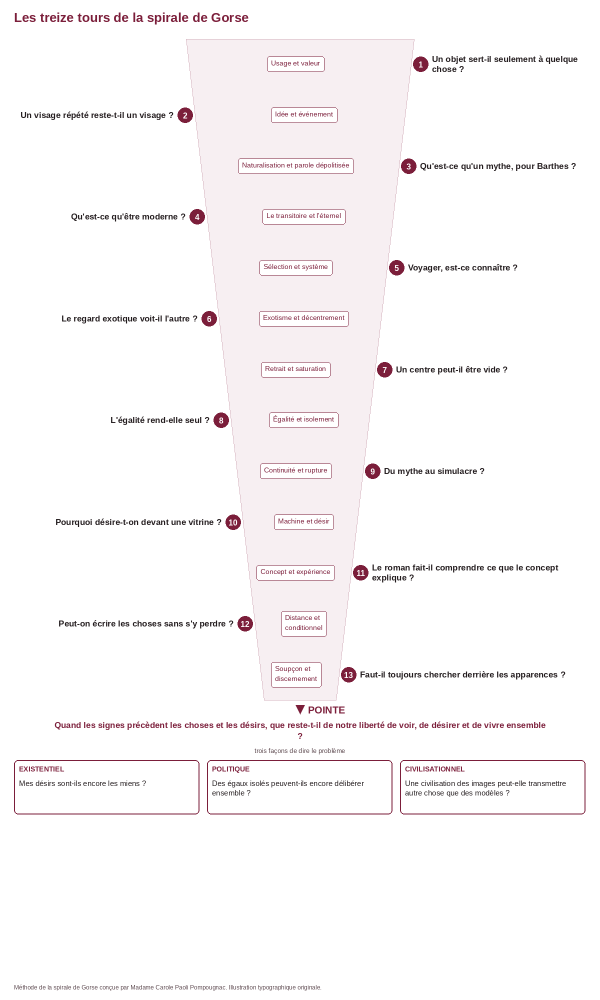
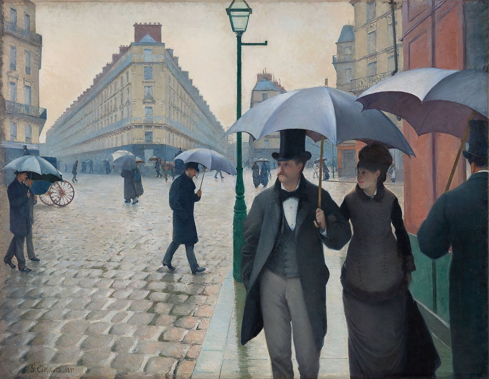
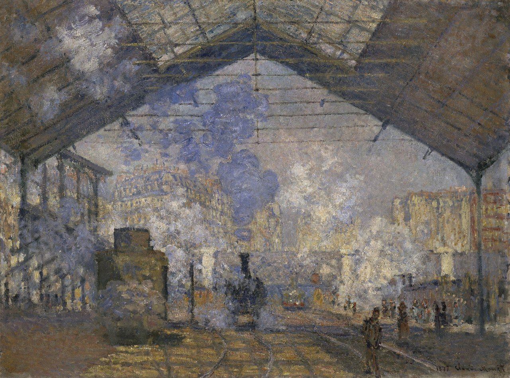
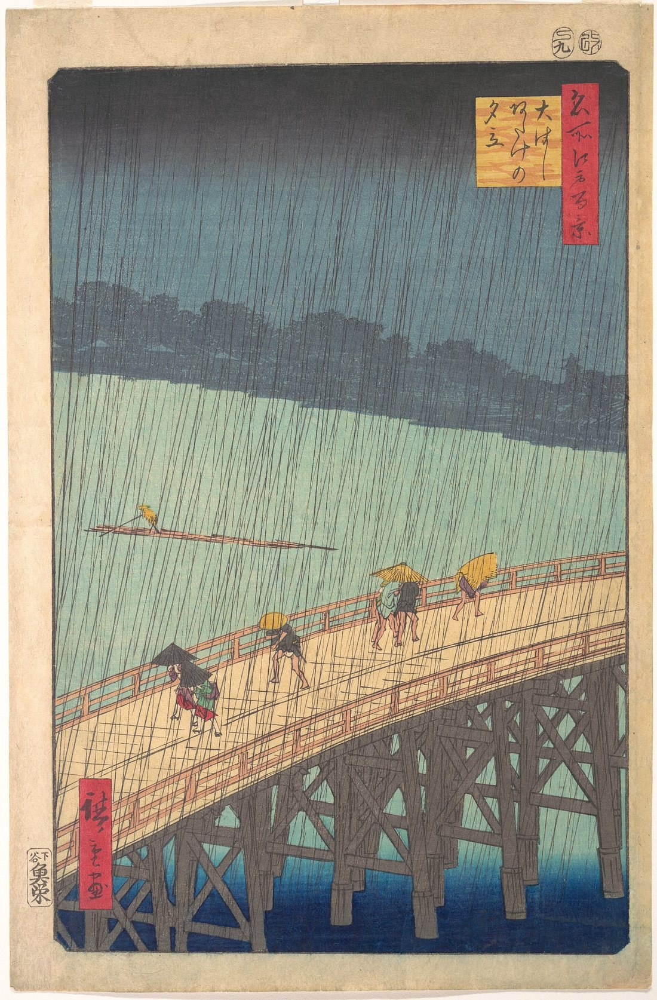
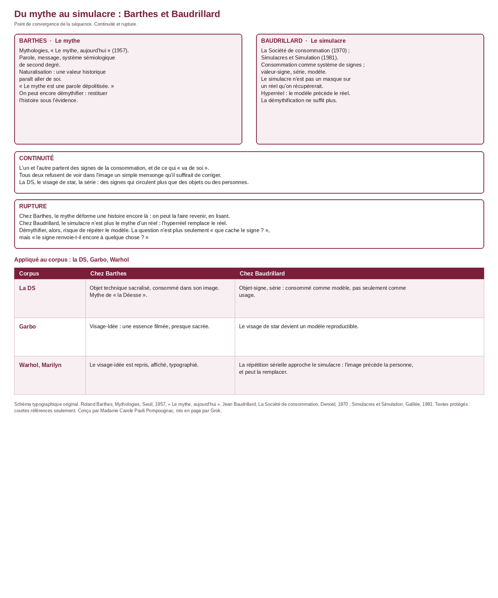
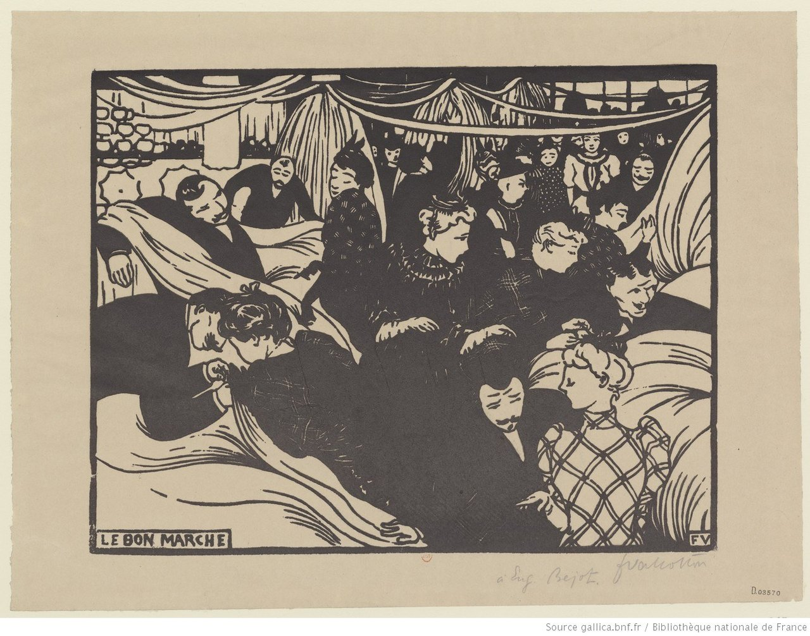
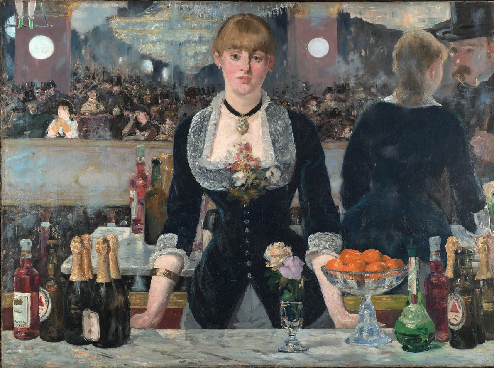

HLP et option littérature · Terminale · Lycée général et technologique
Deux déesses
Déchiffrer les signes de la modernité. Barthes, Perec, Baudrillard, Warhol et leurs aînés : treize séances, la spirale de Gorse, un oral sommatif sur un mythe contemporain.
Madame Carole Paoli Pompougnac
Sans JavaScript, toutes les séances restent visibles à la suite.
Spécialité Humanités, littérature et philosophie, et option littérature, Terminale du lycée général et technologique. Semestre « L'humanité en question », entrées « L'humain et ses limites » et « Création, continuités et ruptures » (BO spécial n° 8 du 25 juillet 2019). La séquence peut aussi servir de passerelle vers l'hypokhâgne.
Objectif. Apprendre à déchiffrer les signes de la modernité, à partir de deux « déesses » (la Citroën DS et le Marilyn de Warhol). Le point de convergence est le mythe chez Barthes (Mythologies, « Le mythe, aujourd'hui ») et le simulacre chez Baudrillard, comparés (continuité et rupture) et appliqués à la DS, à Garbo, à Warhol. Perec, Baudelaire, Flaubert, Tocqueville, Zola, Loti et Benjamin viennent en relais.
Problématique. Comment le regard porté sur un ailleurs (l'Amérique de Baudrillard, le Japon de Barthes) permet-il de déchiffrer les mythes et les illusions de notre propre modernité ?
Perec occupe ensuite une place décisive : Les Choses montre de l'intérieur ce que Barthes démystifie et ce que Baudrillard conceptualise. Le roman ne vient pas illustrer les théories ; il les met à l'épreuve d'une vie.
Objectifs, par les cinq activités langagières
Compréhension de l'écrit. Lire l'intelligence d'un texte : lexique, syntaxe, énonciation, images, rythme, implicite. Lire en entier les textes du domaine public. Les textes protégés n'apparaissent que sous forme de courtes citations, avec leurs références.
Compréhension de l'oral. Écouter un camarade jusqu'au bout, puis reformuler son argument avant de répondre.
Expression écrite. Tenir une trace à chaque séance, puis une interprétation et un essai, d'ampleur comparable, sur deux copies distinctes. S'entraîner à un commentaire composé et à une dissertation. Écrire, en atelier, une « mythologie contemporaine » courte.
Expression orale en continu. Prendre la parole à chaque séance, trente à soixante secondes, à partir d'un détail. Décrire une image avant de l'interpréter. Pour l'évaluation sommative, présenter un mythe contemporain de son choix, en cinq à huit minutes, avec les outils de Barthes et de Baudrillard. Préparer aussi une question de Grand oral, sans réciter un catalogue d'auteurs.
Interaction orale. Observer, questionner et reformuler en binômes. Débattre d'une hypothèse sans quitter le texte ou l'image. Tenir l'entretien de l'évaluation sommative : écouter, reformuler, préciser, sans quitter le signe choisi.
Treize séances de 55 minutes, conduites sur 52, avec un point d'arrêt et une sortie de secours de huit minutes. L'évaluation sommative est un oral : chaque élève présente un mythe contemporain de son choix. L'épreuve écrite de quatre heures reste un entraînement, dans le livret. La note de service du 11 septembre 2026, BO spécial n° 4 du 17 septembre 2026, applicable à compter de la session 2027, insiste sur la maîtrise de la langue.
Barthes appelle la Citroën DS « la Déesse », en jouant sur le surnom de la voiture. En face, le Marilyn de Warhol, sur l'affiche de la Tate Gallery en 1971, incarne l'autre déesse moderne : un visage devenu série, marchandise et idée. Les deux images ouvrent la séquence. Elles ne tranchent rien à elles seules : elles posent une question.
Les treize tours de la spirale de Gorse

Schéma de la spirale de Gorse : treize tours jusqu'à une pointe. Méthode de la spirale de Gorse conçue par Madame Carole Paoli Pompougnac. Illustration originale.
Le premier tour part d'une question que tout élève peut aborder : un objet sert-il seulement à quelque chose ? Le troisième pose, de front, la question de Barthes : qu'est-ce qu'un mythe ? Le neuvième compare le mythe et le simulacre. Chaque séance ajoute un tour. Le tracé aboutit à une pointe, non à un centre : quand les signes précèdent les choses et les désirs, que reste-t-il de notre liberté de voir, de désirer et de vivre ensemble ?
Voie existentielle. Mes désirs sont-ils encore les miens, si des images les ont formés avant moi ?
Voie politique. Des égaux isolés, chacun devant son écran, peuvent-ils encore délibérer ensemble ?
Voie civilisationnelle. Une civilisation des images peut-elle transmettre autre chose que des modèles ?
Le tableau complet des tours, les outils d'analyse et le tableau comparatif des approches (de Baudelaire à Said) sont dans le livret.
Le corpus
Roland Barthes, Mythologies et L'Empire des signesTextes protégés. Courtes citations seulement. Éditions du Seuil. Autorisation en attente.
Georges Perec, Les ChosesTexte protégé. Julliard. Courtes citations seulement. Autorisation en attente.
Jean Baudrillard, La Société de consommation, Simulacres et Simulation, AmériqueTextes protégés. Denoël, 1970 ; Galilée, 1981 ; Grasset, 1986. Courtes citations seulement. Autorisation en attente.
Baudelaire, Flaubert, Tocqueville, Zola, LotiTextes du domaine public, lus en entier dans le livret (Wikisource, éditions identifiées). Tableaux du domaine public : Caillebotte, Monet, La Gare Saint-Lazare, 1877, musée d'Orsay ; Manet, Un bar aux Folies-Bergère, 1882, Courtauld Gallery ; Vallotton, Hiroshige.
Walter Benjamin, essai de 1935-1939 sur l'œuvre d'art à l'époque de sa reproductibilité techniqueL'original allemand est dans le domaine public en France. Les traductions françaises usuelles restent protégées : le livret donne une courte traduction de travail.
Jack Kerouac, Sur la routeTraduction protégée. Courtes citations d'ouverture seulement, avec la référence de l'édition.
Là où un passage long de Barthes, Perec ou Baudrillard serait nécessaire, le livret indique : « Texte non reproduit dans l'attente de l'autorisation de l'éditeur », avec la référence précise. Le professeur projette le passage depuis son exemplaire.
Séance 1. Voir un objet ou reconnaître une déesse ?
Tour 1 de la spirale de Gorse : un objet sert-il seulement à quelque chose ?
Problématique. Pourquoi certains objets semblent-ils porter un sens, presque sacré, avant même que nous les examinions ?
Support : la photographie de la Citroën DS 19, et Barthes, Mythologies, « La nouvelle Citroën ». L'affiche de Warhol vient à la séance 2.
Citroën DS 19 à l'autotentoonstelling (salon de l'automobile) de la RAI, Amsterdam, 11 février 1958. Photographie Harry Pot / Anefo, Nationaal Archief (Pays-Bas), CC0, domaine public.
Texte non reproduit dans l'attente de l'autorisation de l'éditeur. Roland Barthes, Mythologies, Seuil, 1957, « La nouvelle Citroën ». Le professeur projette le texte depuis son exemplaire.
« Je crois que l'automobile est aujourd'hui l'équivalent assez exact des grandes cathédrales gothiques. » La voiture est « consommée dans son image, sinon dans son usage » ; « la Déesse est d'abord un nouveau Nautilus ».
Déroulement, 52 minutes.
Diagnostic individuel (0 à 8 min).
Observation de la photographie de la DS, oral en binômes (8 à 16 min).
Lecture guidée du passage de Barthes (15 à 27 min).
Exercices de vocabulaire et de syntaxe (27 à 35 min).
Analyse d'une publicité et confrontation orale (35 à 44 min).
Trace écrite, flashcards et billet de sortie (44 à 52 min).
Distinguer « cette voiture permet de se déplacer » et « cette voiture représente la réussite ». Le mot « mythe » ne signifie pas nécessairement « mensonge ».
Point d'arrêt vers la minute 44. Une sortie de secours est prévue dans le livret.
Séance 2. Un visage répété reste-t-il un visage ?
Tour 2 de la spirale de Gorse : un visage répété reste-t-il un visage ?
Problématique. Quand le visage d'une star est reproduit, devient-il une idée, une marchandise, ou les deux ?
Décrivez d'abord l'affiche comme si votre camarade ne la voyait pas : typographie, fond, couleurs, cadrage, ce qui manque. N'interprétez pas encore.
Quel est le format ? Que lit-on en haut de l'affiche ?
Quelle est la couleur du fond, des cheveux, de la peau, des lèvres ?
Comment le visage est-il cadré ? Que voit-on du corps, du décor, d'un récit ?
L'expression vous paraît-elle unique, ou déjà un modèle ? Un détail suffit.
Pour prolonger, ouvrez la page officielle de la Tate, Andy Warhol, Marilyn Diptych, 1962, T03093 : tate.org.uk/art/artworks/warhol-marilyn-diptych-t03093. Notez trois différences précises avec l'affiche de 1971. On ne reproduit pas le diptyque ici.
« Le visage de Garbo est une Idée, celui d'Hepburn un Événement. »
Roland Barthes, Mythologies, Seuil, 1957, « Le visage de Garbo ». Texte protégé : courte citation. Le professeur projette le texte depuis son exemplaire.
Que distingue une Idée d'un Événement, pour un visage filmé ?
Le Marilyn de Warhol est-il une Idée, un Événement, ou autre chose que cette alternative ? Un détail de l'affiche, non une impression générale.
Que change le support : une affiche typographiée, destinée à être vue, vendue, répétée ?
Déroulement, 52 minutes.
Description précise, individuelle puis en binômes (0 à 12 min).
Mise en commun : cinq détails, une absence (12 à 20 min).
Lecture guidée de « Le visage de Garbo » (20 à 34 min).
Confrontation, puis observation guidée de la page de la Tate (34 à 44 min).
Trace écrite, flashcards, devoir (44 à 52 min).
Point d'arrêt vers la minute 44. Une sortie de secours est prévue dans le livret.
Séance 3. Qu'est-ce qu'un mythe, pour Barthes ?
Tour 3 de la spirale de Gorse : qu'est-ce qu'un mythe, pour Barthes ?
Problématique. Qu'est-ce qu'un mythe, pour Barthes, et comment une évidence se fabrique-t-elle ?
Supports : Flaubert, Dictionnaire des idées reçues (domaine public) ; Barthes, « Le mythe, aujourd'hui » (courtes citations, Seuil, 1957). Cette séance installe les outils. La comparaison avec Baudrillard a lieu à la séance 9, et prépare l'oral sommatif.
« Fortune. Quand on vous parle d'une grande fortune, ne pas manquer de dire. “Oui, mais est-elle bien sûre ?” »
Gustave Flaubert, Dictionnaire des idées reçues, texte du domaine public.
« Le mythe est une parole. » « Le mythe ne cache rien et il n'étale rien : il déforme. » « Le mythe est une parole dépolitisée. »
Roland Barthes, Mythologies, « Le mythe, aujourd'hui », Seuil, 1957. Texte protégé, courtes citations. Le professeur projette les pages du schéma.
On retient le mouvement : au premier degré, un signifiant et un signifié s'unissent en un signe ; au second degré, ce signe devient une forme, à laquelle s'ajoute un concept. L'effet est de naturaliser une valeur, et de dépolitiser une parole.
Dans une entrée de Flaubert, quel est le signe, au premier degré, et quel concept s'y accroche ?
En quoi le mythe n'est-il pas simplement un mensonge à corriger ?
Appliquez le geste à la DS, puis au Marilyn de Warhol : qu'est-ce qui paraît « naturel » ?
Déroulement, 52 minutes.
Réactivation : une évidence de la veille (0 à 6 min).
Lecture à voix haute d'entrées de Flaubert (6 à 18 min).
Confrontation avec la première page de Barthes, projetée (18 à 32 min).
Langue : ironie, définition, sous-entendu (32 à 40 min).
Atelier : rédiger une entrée contemporaine (40 à 44 min, puis clôture).
Trace écrite et cartes (44 à 52 min).
À distinguer : l'idée reçue (ce que l'on répète sans y penser) et le mythe (un système de second degré, qui naturalise une valeur).
Le mythe, aujourd'hui. Au premier degré, un signifiant et un signifié s'unissent en un signe. Au second degré, ce signe est repris comme un nouveau signifiant, auquel s'ajoute un concept. Le mythe est cette seconde signification. Citation : « Le mythe est un système de communication, c'est un message. » Roland Barthes, Mythologies, Seuil, 1957, « Le mythe, aujourd'hui ».
Séance 4. Baudelaire : qu'est-ce que la modernité ?
Tour 3 de la spirale de Gorse : qu'est-ce qu'être moderne ?
Problématique. La modernité est-elle ce qui passe, ou ce qui reste de ce qui passe ?

Gustave Caillebotte, Rue de Paris, temps de pluie, 1877, Art Institute of Chicago, domaine public. Observer trois détails qui datent la scène, et un détail qui pourrait être de tous les temps.
« La modernité, c'est le transitoire, le fugitif, le contingent, la moitié de l'art, dont l'autre moitié est l'éternel et l'immuable. »
Charles Baudelaire, Le Peintre de la vie moderne, IV, « La modernité », 1863. Texte du domaine public, Wikisource. L'extrait complet est dans le livret.

Claude Monet, La Gare Saint-Lazare, 1877, musée d'Orsay, Paris, domaine public. Comme Warhol plus tard, Monet travaille ici par série. Quel détail est transitoire ? Lequel pourrait demeurer dans la toile ?
Le livret donne aussi, intégralement, le sonnet « À une passante », pour le commentaire composé : tirer l'éternel du transitoire, dans une rencontre qui fuit, bien différente du visage-série de Warhol.
Déroulement, 52 minutes.
Réactivation : trois idées reçues de 2026 (0 à 5 min).
Observation du tableau de Caillebotte, en binômes (5 à 13 min).
Lecture à voix haute, puis lecture approfondie de Baudelaire (13 à 30 min).
Langue : la définition et la mise en relief (30 à 38 min).
Débat : la DS et Marilyn sont-elles des « déesses » au sens de Baudelaire ? (38 à 44 min).
Trace écrite, cartes, devoir (44 à 52 min).
Séance 5. Voyager pour connaître, ou pour désapprendre ?
Tour 4 de la spirale de Gorse : voyager, est-ce connaître ?
Problématique. Quand on part voir ailleurs, voit-on l'autre, ou ce que l'on a emporté avec soi ?
Supports : courtes citations de Kerouac, Sur la route (traduction protégée) ; ouverture de Barthes, L'Empire des signes (Seuil, autorisation en attente). Le professeur projette les passages depuis son exemplaire.
Texte non reproduit dans l'attente de l'autorisation de l'éditeur. Références précises dans le livret.
Déroulement, 52 minutes.
Amorce : que cherche-t-on, quand on part ? (0 à 8 min).
Lecture guidée des courtes citations de Kerouac (8 à 18 min).
Lecture de l'ouverture de Barthes, projetée (18 à 32 min).
Langue : sélection, système, décentrement (32 à 40 min).
Oral en binômes : connaître, ou désapprendre ? (40 à 44 min).
Trace écrite et cartes (44 à 52 min).
Séance 6. Loti au Japon : l'exotisme en question
Tour 5 de la spirale de Gorse : le regard exotique voit-il l'autre ?
Problématique. Peut-on décrire un pays sans en faire un décor ?

Utagawa Hiroshige, Averse soudaine sur le pont Shin-Ōhashi et Atake, 1857, Metropolitan Museum of Art, New York, domaine public.
Supports : Pierre Loti, Madame Chrysanthème (domaine public) ; le regard de Barthes, en regard, par courtes citations.
Déroulement, 52 minutes.
Observation de l'estampe d'Hiroshige (0 à 8 min).
Lecture d'un passage de Loti (8 à 24 min).
Confrontation avec le décentrement de Barthes (24 à 36 min).
Langue : stéréotype, pittoresque, point de vue (36 à 44 min).
Trace et cartes (44 à 52 min).
À distinguer : l'exotisme (l'autre comme décor) et le décentrement (accepter que le centre puisse ne pas être le nôtre).
Séance 7. Le centre vide et le corps saturé
Tour 6 de la spirale de Gorse : un centre peut-il être vide ?
Problématique. Que voit-on, quand le centre se retire et que les surfaces se saturent ?
Supports : courtes citations de L'Empire des signes (le centre vide) et d'Amérique (le corps, la surface). Textes protégés, projetés depuis l'exemplaire du professeur.
Texte non reproduit dans l'attente de l'autorisation de l'éditeur. Références : Roland Barthes, L'Empire des signes ; Jean Baudrillard, Amérique, Grasset, 1986.
Déroulement, 52 minutes.
Réactivation du tour 5 (0 à 6 min).
Lecture guidée de Barthes : le centre vide (6 à 22 min).
Lecture guidée de Baudrillard : le corps saturé (22 à 36 min).
Tableau de distinctions, oral (36 à 44 min).
Trace écrite et cartes (44 à 52 min).
Séance 8. Tocqueville, Baudrillard : l'Amérique comme miroir
Tour 7 de la spirale de Gorse : l'égalité rend-elle seul ?
Problématique. L'égalité des conditions rapproche-t-elle les êtres, ou chacun devant son plaisir et son écran ?
Supports : Tocqueville, De la démocratie en Amérique (domaine public) ; courtes citations de Baudrillard, Amérique.
Tocqueville décrit déjà, en 1840, des « hommes semblables et égaux » qui s'isolent dans leurs petits plaisirs. Le texte complet du passage retenu est dans le livret (domaine public).
Déroulement, 52 minutes.
Amorce : que voit-on, de loin, dans « l'Amérique » ? (0 à 6 min).
Lecture de Tocqueville (6 à 22 min).
Confrontation avec Baudrillard, passage projeté (22 à 36 min).
Langue : individualisme, isolement, « despotisme doux » (36 à 44 min).
Trace et cartes (44 à 52 min).
Séance 9. Du mythe au simulacre : Barthes et Baudrillard
Tour 9 de la spirale de Gorse : du mythe au simulacre ?
Problématique. Le simulacre de Baudrillard continue-t-il le mythe de Barthes, ou le rompt-il ?
Point de convergence de la séquence. On compare le mythe, chez Barthes, et le simulacre, chez Baudrillard, puis on applique la comparaison à la DS, à Garbo, au Marilyn de Warhol. Supports : courtes citations de « Le mythe, aujourd'hui », de La Société de consommation et de Simulacres et Simulation ; rappel de Benjamin. Textes protégés, projetés ou cités brièvement.

Du mythe au simulacre : schéma typographique original. Conception : Madame Carole Paoli Pompougnac, mis en page par Grok.
Continuité. Les signes de la consommation, ce qui « va de soi ». L'image n'est pas un simple mensonge à corriger.
Rupture. Chez Barthes, le mythe déforme une histoire encore là, que la lecture peut faire revenir. Chez Baudrillard, le simulacre n'est plus le masque d'un réel à récupérer : le modèle peut précéder le réel, ou le remplacer.
Sur la photographie du salon, ou sur le Marilyn de Warhol, qu'est-ce que Barthes permet de nommer, que Baudrillard nomme autrement ?
Le Marilyn est-il encore un mythe, ou déjà un simulacre ? Montrez le basculement, ou son refus, à partir d'un détail.
Formulez une continuité et une rupture, sur un seul exemple. Cette phrase servira l'oral sommatif.
Texte non reproduit dans l'attente de l'autorisation de l'éditeur. Référence : Jean Baudrillard, Amérique, Grasset, 1986. Le livret retient aussi, dans le tableau comparatif, l'« aura » de Benjamin et les copies « plus vraies que nature » d'Eco.
Déroulement, 52 minutes.
Diagnostic : une image vue ce matin (0 à 8 min).
Lecture guidée du passage de Baudrillard (8 à 24 min).
Distinguer représentation, modèle, hyperréalité (24 à 36 min).
Oral : l'écran montre-t-il encore ce qui existe ? (36 à 44 min).
Trace, cartes, préparation du devoir de mi-parcours si prévu (44 à 52 min).
Séance 10. Zola : le grand magasin, machine à désir
Tour 9 de la spirale de Gorse : pourquoi désire-t-on devant une vitrine ?
Problématique. Le désir naît-il de l'objet, ou de la manière dont on le montre ?

Félix Vallotton, Le Bon Marché, 1893, gravure sur bois, Bibliothèque nationale de France (Gallica), domaine public.

Édouard Manet, Un bar aux Folies-Bergère, 1882, Courtauld Gallery, Londres, domaine public. Qui est regardé, ici, et qui consomme ?
Support : Émile Zola, Au Bonheur des Dames (domaine public). Le passage retenu, complet, est dans le livret.
Déroulement, 52 minutes.
Observation de la gravure de Vallotton (0 à 8 min).
Lecture du passage de Zola (8 à 26 min).
Lecture approfondie : machine, désir, mise en scène (26 à 38 min).
Langue et oral en binômes (38 à 44 min).
Trace et cartes (44 à 52 min).
Séance 11. Le roman nous apprend-il ce que le concept ne peut pas dire ?
Tour 10 de la spirale de Gorse : le roman fait-il comprendre ce que le concept explique ?
Problématique. Que gagne-t-on, à faire vivre une illusion de l'intérieur, plutôt qu'à la définir ?
Supports : ouverture de Perec, Les Choses (courtes citations, Julliard, autorisation en attente) ; rappel des notions déjà acquises (mythe, valeur-signe, désir).
Texte non reproduit dans l'attente de l'autorisation de l'éditeur. Georges Perec, Les Choses. Le professeur projette l'incipit depuis son exemplaire, lignes numérotées.
Déroulement, 52 minutes.
Pont : ce que le concept a déjà permis de nommer (0 à 8 min).
Lecture de l'ouverture de Perec, projetée (8 à 26 min).
Comparer explication et expérience (26 à 38 min).
Oral : que le roman seul peut faire entendre (38 à 44 min).
Trace et cartes (44 à 52 min).
Séance 12. Perec : écrire les choses au conditionnel
Tour 11 de la spirale de Gorse : peut-on écrire les choses sans s'y perdre ?
Problématique. Que change le conditionnel, quand on énumère ce que l'on voudrait posséder ?
Support : un passage de Les Choses au conditionnel, projeté depuis l'exemplaire du professeur. Courtes citations seulement dans le livret.
Texte non reproduit dans l'attente de l'autorisation de l'éditeur. Georges Perec, Les Choses, Julliard.
Déroulement, 52 minutes.
Réactivation de l'incipit (0 à 6 min).
Lecture du passage au conditionnel (6 à 24 min).
Langue : le conditionnel, l'énumération, la distance (24 à 38 min).
Atelier d'écriture court (38 à 44 min).
Trace et cartes (44 à 52 min).
Séance 13. Faut-il toujours chercher derrière les apparences ?
Tour 12 de la spirale de Gorse, pointe du problème : faut-il toujours chercher derrière les apparences ?
Problématique. Le soupçon éclaire-t-il le regard, ou l'épuise-t-il ?
La séance conduit à la pointe : quand les signes précèdent les choses et les désirs, que reste-t-il de notre liberté de voir, de désirer et de vivre ensemble ? Elle rouvre les trois voies, existentielle, politique et civilisationnelle.
Déroulement, 52 minutes.
Reprise des distinctions acquises (0 à 10 min).
Lecture d'un court corpus de citations déjà vues (10 à 22 min).
Débat : faut-il toujours chercher derrière les apparences ? (22 à 38 min).
Préparation de l'oral sommatif : choix du signe, première phrase de l'exposé (38 à 44 min).
Trace finale et cartes (44 à 52 min).
À distinguer : le soupçon (tout cacherait autre chose) et le discernement (savoir quand un signe demande d'être lu, et quand il faut s'arrêter).
Évaluation sommative : un mythe contemporain, à l'oral
L'évaluation sommative de la séquence est un oral. Chaque élève présente, seul ou seule, un mythe contemporain de son choix (une marque, une star, un smartphone, une basket, un influenceur, une voiture, ou un autre signe justifié), et l'analyse avec les outils de Barthes (mythe, système de second degré, naturalisation, parole dépolitisée) et de Baudrillard (consommation comme système de signes, série, simulacre, hyperréel). On distingue, sur cet exemple, une continuité et une rupture.
Durée : cinq à huit minutes d'exposé, puis un entretien d'environ cinq minutes. Un support visuel unique est possible, à condition que les droits soient clarifiés (source officielle, ou description sans reproduction non autorisée).
Préparation, en huit étapes
Choisir un signe précis, non un thème vague.
Le décrire comme si un camarade ne le voyait pas.
Premier degré, à la manière de Barthes : quel est le signe ?
Second degré : quel concept s'y ajoute, qu'est-ce qui paraît naturel, en quoi la parole est-elle dépolitisée ?
Relire avec Baudrillard : série, modèle, valeur-signe, usage ou hyperréel.
Une continuité et une rupture, sur ce signe, pas en général.
Une limite : ce que l'analyse ne permet pas encore de conclure.
Deux questions possibles pour l'entretien.
Structure de l'exposé
Ouverture, environ 45 secondes : description, question.
Lecture barthésienne, environ 2 minutes.
Lecture baudrillardienne, environ 2 minutes, seulement si le signe le permet.
Continuité et rupture, environ 1 minute 30.
Limite et ouverture, environ 45 secondes.
Phrases d'amorce. « Je décris d'abord … ; je n'interprète qu'ensuite. » « Au premier degré, le signe est … ; au second degré, il fait passer pour naturel que … » « Chez Barthes, on dirait une parole dépolitisée, parce que … » « Chez Baudrillard, pourtant, … » « La continuité, ici, c'est … ; la rupture, c'est … » « Je reformule votre question : … »
La grille, sur 20, est dans le livret : description et choix du signe (3), outils de Barthes (5), outils de Baudrillard (5), continuité et rupture (3), entretien (2), langue et tenue de l'oral (2).
Entraînement écrit, en complément
L'épreuve écrite de quatre heures, sur le modèle de la spécialité HLP, reste un entraînement, non l'évaluation sommative. Deux sujets sont proposés. Le sujet A s'appuie sur un texte du domaine public, reproduit en entier dans le livret. Le sujet B s'appuie sur un passage d'Amérique que le professeur distribue depuis son exemplaire : ce texte n'est pas reproduit ici.
Sujet A. Baudelaire, « Le public moderne et la photographie »
« Un Dieu vengeur a exaucé les vœux de cette multitude. Daguerre fut son Messie. »
Charles Baudelaire, Salon de 1859, II, « Le public moderne et la photographie ». Texte du domaine public, Wikisource. L'extrait complet, le lexique et les grilles sont dans le livret.
Interprétation littéraire, /10. Comment Baudelaire fait-il de la photographie l'idole d'une foule ?
Essai philosophique, /10. Les images nous éloignent-elles du réel ?
Sujet B. Baudrillard, Amérique
Interprétation philosophique, /10. Comment Baudrillard remet-il en cause, dans ce passage, l'opposition habituelle entre fiction et réalité ?
Essai littéraire, /10. La littérature nous apprend-elle surtout à découvrir ce qui se cache derrière les apparences ?
Le livret propose aussi un entraînement au bac : un commentaire composé de « À une passante », une dissertation centrée sur le mythe chez Barthes et le simulacre chez Baudrillard, un essai, deux questions d'oral, avec plans détaillés et grilles dans la fiche de correction.
Téléchargements
Quatre documents, chacun en PDF, Word et LibreOffice. Vous pouvez utiliser et adapter ces documents en citant leur autrice, sans usage commercial, et en partageant vos versions dans les mêmes conditions. CC BY-NC-SA 4.0.